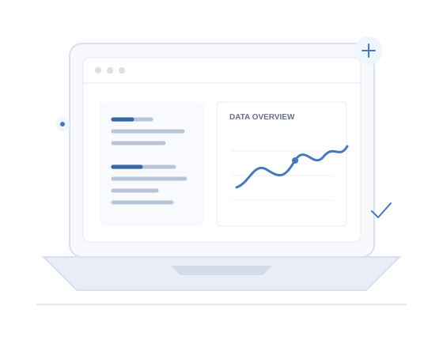

Location
Delhi
OPEN TO OPPORTUNITIES
DEVELOPER · DATA SCIENCE & MACHINE LEARNING ENTHUSIAST
I build practical software projects, explore machine learning, and turn complex problems into useful digital experiences.

ABOUT
I’m a developer interested in the space where software and data meet. I enjoy taking a question, understanding the problem underneath it, and building a clear, useful solution — whether that means a web experience, an analysis, or a machine learning experiment.
I learn by building, testing assumptions, and improving through feedback. I’m currently growing my skills across software development, data science, and machine learning.
Delhi
MCA, AI & Data Science
Software · Data · ML
LLMs · RAG
Tools I use and concepts I’m learning.
SELECTED WORK
EXPERIENCE
A growing record of what I’m studying, building, and exploring. Add dated education or work details when you’re ready.
PROFILES
Follow along with what I’m building and learning.
RESUME
Add your resume as assets/resume.pdf when you’re ready to share it.
CONTACT
I’m always interested in connecting with people who enjoy technology, data science, and building useful products.